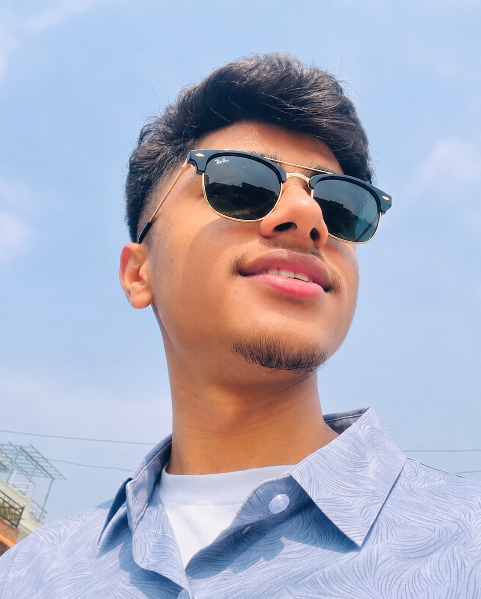

Bachelor of Business Studies (BBS) Student
I am a student of Bachelor of Business Studies (BBS) at Shaheed Smarak College, Bharatpur, Chitwan. The BBS program has provided me with a strong foundation in accounting, finance, economics, business management, marketing, and organizational leadership.
Through my academic journey, I have developed analytical thinking, communication skills, leadership qualities, problem-solving abilities, and an understanding of how businesses operate in real-world environments.
Studying BBS has helped me gain knowledge of financial reporting, budgeting, business decision-making, entrepreneurship, and management practices.
My goal is to continuously improve my knowledge, strengthen my professional skills, and build a successful career in the business field.
Shaheed Smarak College
Bharatpur-19, Chitwan, Nepal
Studying business-related subjects including Accounting, Finance, Economics, Business Communication, Taxation, Marketing, Entrepreneurship, and Management.